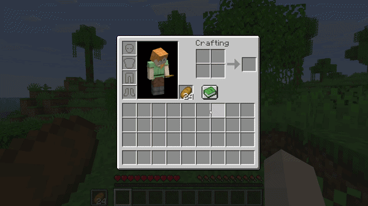

Shift-click
Shift-click a matching stack in your inventory or a supported container and it fills the existing offhand stack first.
Demo
Matching stacks move straight into the offhand when there is room, while unrelated interactions keep their normal vanilla behavior.

How it works
If the offhand already contains a compatible stack and there is still room, refill it first.
Shift-click a matching stack in your inventory or a supported container and it fills the existing offhand stack first.
When the main hand or hovered inventory slot matches the offhand, the swap key refills the stack before performing a normal swap.
If refilling is not possible, Minecraft behaves exactly as usual. Different items, full stacks and non-stackable items are left alone.
Example
Before
After
Behavior
The mod only changes interactions where a compatible offhand stack can actually be refilled.
Item components and normal Minecraft stack compatibility rules are respected. Different stacks are never force-merged.
Inventory prediction is handled so compatible shift-clicks appear directly in the offhand without temporary slot flicker.
Inventory changes remain server-authoritative and synchronize normally in singleplayer and multiplayer.
Why
The default offhand behavior kept getting in the way, so I made the interaction work the way I always expected it to.